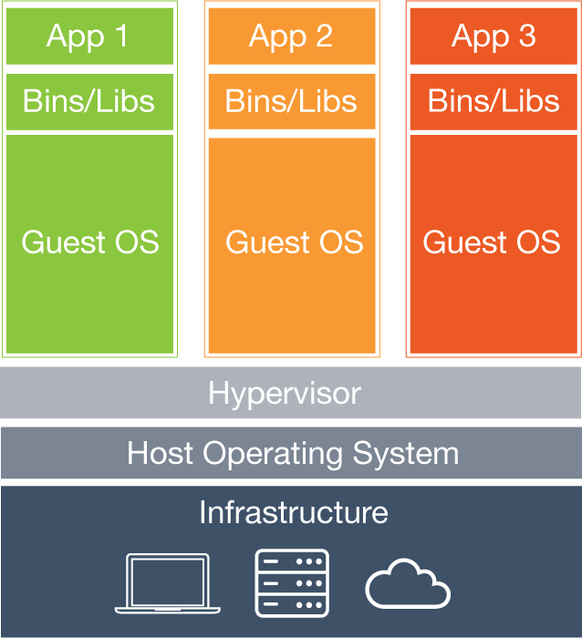
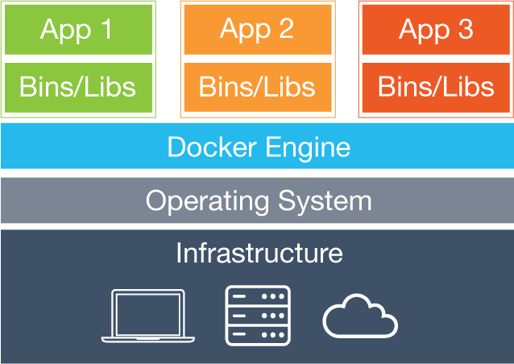
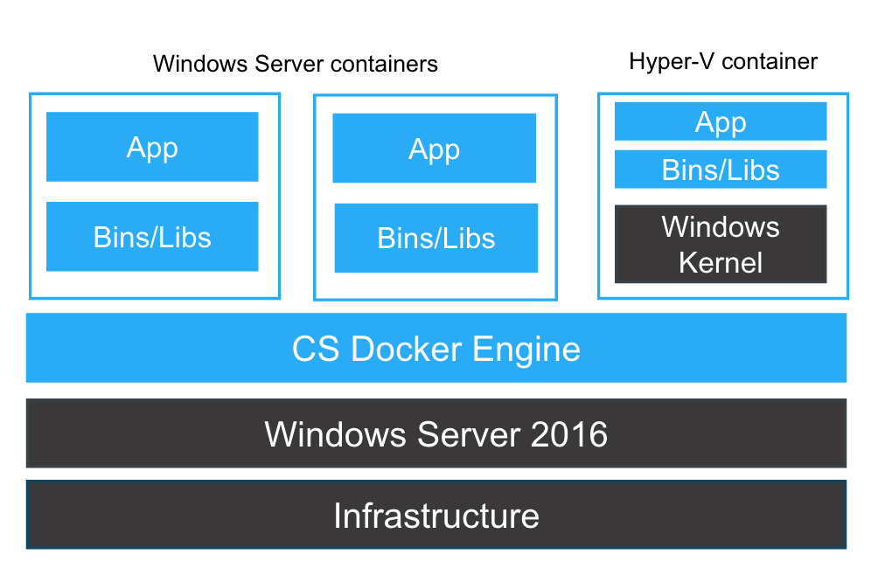

Docker Container Platform for Windows Server 2016
Presented by Fernando Ayala
Agenda
- What is Docker
- Microsoft Server 2016 features for Docker
- Windows Containers benefits for Docker
- Docker for Windows
What is Docker
Docker is the world’s leading software container platform
Docker is an open platform for developing, shipping, and running applications. Docker enables you to separate your applications from your infrastructure so you can deliver software quickly.
Virtual Machines
Containers
Microsoft Server 2016 features for docker
Windows Containers are offered with two container base images:
- Windows Server Core: Windows server apps (IIS, SQL Server, Full .NET Framework)
- Nano Server: New minimal Windows version (IIS, .NET Core)
Windows Container Types
- Windows Server Containers
- Hyper-V Containers
- 
Windows Containers benefits for Docker
- Eliminate conflicts of different versions of IIS/.NET to coexist on a single system with container isolation.
- Complimentary with Hyper-V virtualization
- Take advantage of new base images like Windows Server Core and Nano Server
- Consistent Docker user experience use the same commands as Docker for Linux environments
- Added isolation properties with Hyper V containers selected at runtime
Docker for Windows
Docker for Windows install includes:.
- Docker Engine,
- Docker CLI client
- Docker Compose
- Docker Machine
Docker Engine Components